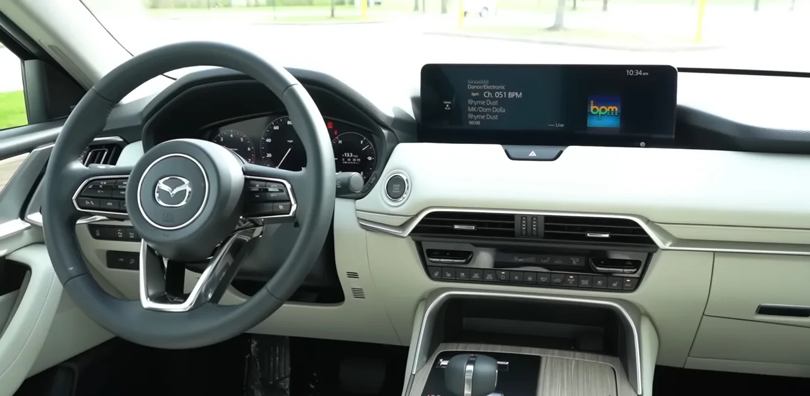
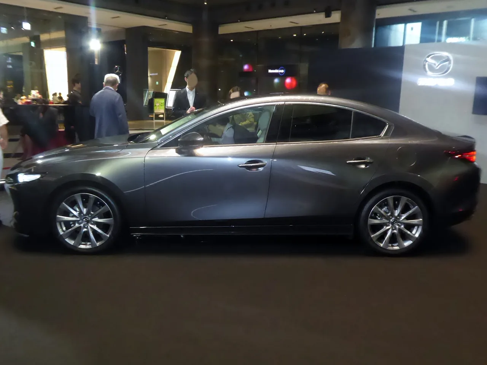

▲ 마쓰다 CX-90 — 상반기 판매가 24% 감소한 2만1,271대에 그치며 플래그십 SUV의 부진을 보여줬다
마쓰다의 상반기 미국 판매 실적을 뜯어보면 이상한 그림이 나옵니다. 브랜드가 야심 차게 내놓은 플래그십 대형 SUV 두 모델, CX-90과 CX-70이 나란히 두 자릿수 감소율을 기록했습니다. CX-90은 24% 줄어든 2만1,271대, 3열이 빠진 파생 모델 CX-70은 29% 급감한 5,974대에 그쳤습니다. 반면 2018년에 나와 곧 단종 10주년을 앞둔 마쓰다3는 7월 판매가 전년 대비 88% 뛰었고, 연초 대비 누적으로도 28% 증가했습니다. 최신 플래그십이 밀리고 구형 세단이 버티는 역설적인 상황입니다.
1. 24%와 29%, 나란히 무너진 플래그십 SUV
CX-90은 마쓰다가 오랜만에 내놓은 3열 대형 SUV로, 브랜드의 프리미엄 전환을 상징하는 모델이었습니다. 그런데 상반기 판매가 전년 대비 24% 줄어든 2만1,271대에 그쳤습니다. 3열을 뺀 2열 전용 파생 모델 CX-70은 상황이 더 심각합니다. 29% 급감한 5,974대로, 절대 물량 자체가 CX-90의 3분의 1에도 못 미칩니다. 두 모델 모두 마쓰다가 '프리미엄'을 내세우며 야심 차게 준비한 라인업이라는 점에서, 이 동반 부진은 단순한 일시적 조정이 아니라 구조적 문제로 읽힙니다.

▲ 마쓰다 CX-70 — 상반기 판매 5,974대로 29% 급감하며 CX-90보다 더 큰 낙폭을 보였다
2. 관세와 PHEV 냉각이라는 이중고
부진의 배경에는 두 가지 구조적 요인이 겹쳐 있습니다. 첫째는 관세입니다. 마쓰다 차량 상당수가 일본에서 수입되는데, 관세 부담이 가격에 그대로 반영되면서 가격 경쟁력이 흔들렸습니다. 둘째는 플러그인하이브리드(PHEV) 수요 자체의 냉각입니다. 미국 내 PHEV 보조금 축소와 맞물려, 고가의 전동화 대형 SUV에 대한 소비자 관심이 전반적으로 식고 있습니다. CX-90·CX-70 모두 PHEV 트림을 프리미엄 라인업의 핵심으로 내세웠던 만큼, 이 흐름의 직격탄을 맞은 셈입니다.
3. 8년 된 마쓰다3는 왜 88% 뛰었나
역설적인 대목은 여기서 나옵니다. 2018년에 출시돼 10주년을 코앞에 둔 준중형 세단 마쓰다3가 7월 판매에서 전년 대비 88%나 증가했고, 연초 이후 누적으로도 28% 늘었습니다. 대대적인 변화도 없이 거의 그대로 팔리고 있는 구형 모델이 이렇게 선전하는 이유는, 역설적으로 '저렴하고 검증된 차'를 찾는 소비자가 늘었기 때문으로 풀이됩니다. 고가의 신형 대형 SUV에 대한 부담이 커질수록, 상대적으로 저렴하고 오랫동안 안정성이 검증된 세단으로 눈을 돌리는 소비자가 늘어난 것입니다. 신차와 구형차의 명암이 정확히 엇갈리는 지점입니다.
| 모델 | 판매량 | 증감률 |
|---|---|---|
| CX-90(플래그십 3열 SUV) | 2만1,271대 | 24%↓ |
| CX-70(2열 파생 SUV) | 5,974대 | 29%↓ |
| 마쓰다3(2018년형 세단) | 7월 기준 급증 | 88%↑(7월), 28%↑(누적) |

▲ 마쓰다 CX-90 실내 — 프리미엄 지향 인테리어를 갖췄지만, 가격 부담이 판매 부진의 요인 중 하나로 꼽힌다

▲ 마쓰다3 — 2018년형 디자인을 큰 변화 없이 이어가고 있음에도 7월 판매가 88% 뛰며 플래그십 SUV의 부진과 대조를 이뤘다
4. 마쓰다의 반전 카드, '안전'
마쓰다 최고재무책임자(CFO) 제프리 가이턴은 이 상황을 두고 "용납할 수 없다"고 밝히며, 안전성을 앞세운 메시지 캠페인으로 판매 회복을 꾀하겠다고 밝혔습니다. 구체적으로는 마쓰다가 미국 고속도로안전보험협회(IIHS)의 최우수 안전상(Top Safety Pick+)을 경쟁사 중 가장 많이 받았다는 점, 그리고 새로 디자인된 CX-5가 IIHS 최고 등급을 획득했다는 점을 전면에 내세우겠다는 전략입니다. 화려한 신기술 경쟁 대신, 검증된 안전성이라는 가장 기본적인 가치로 승부를 보겠다는 뜻입니다.
5. 이 전략, 통할까
안전성 중심 전략이 통할지는 지켜봐야 합니다. 관세와 PHEV 수요 냉각이라는 구조적 요인은 마케팅 메시지만으로 해결되지 않는 문제이기 때문입니다. 다만 마쓰다3의 사례가 보여주듯, 지금 미국 소비자들은 화려한 신기술보다 '믿을 수 있고 부담 없는 차'를 찾고 있다는 신호가 뚜렷합니다. 안전성 강조 전략이 이런 소비자 심리와 맞아떨어진다면, CX-90·CX-70도 신차 효과가 아니라 '신뢰할 수 있는 대형 SUV'라는 포지셔닝으로 재기할 여지가 있습니다. 관건은 가격 경쟁력 문제를 얼마나 빨리 해결하느냐에 달려 있습니다.